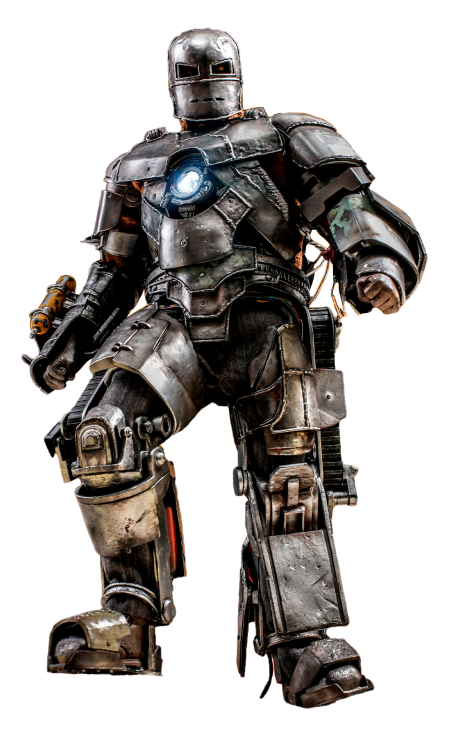

MARK I

Primeira armadura de Tony Stark, movida pelo Reator Arc e equipada com armas improvisadas, símbolo do início da tecnologia do Homem de Ferro.

Primeira armadura de Tony Stark, movida pelo Reator Arc e equipada com armas improvisadas, símbolo do início da tecnologia do Homem de Ferro.
